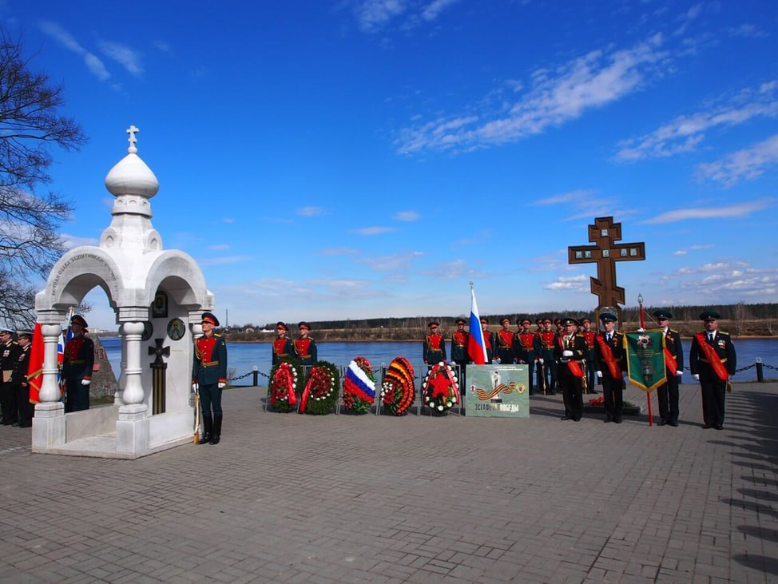

Поклонный крест на берегу был установлен в 2004 году. Часовня-сень из белого мрамора построена в память воинов, павших в боях за Ленинград в Великой Отечественной войне, по инициативе общественной организации “Ветераны военной контрразведки”. Среди воинов всех родов войск, переправлявшихся на Невский «пятачок» и героически там сражавшихся, были и сотрудники госбезопасности, выполнявшие задания особой важности и значимости, зачастую ценою своей жизни. Интересно, что часовня была открыта 22 июня 2011 года ровно в 4 утра. Жители поселка собрались в этот час, чтобы почтить памятью всех людей, кто ровно 50 лет назад рано утром узнал о начале войны.
Православная часовня на берегу Невы и поклонный крест
